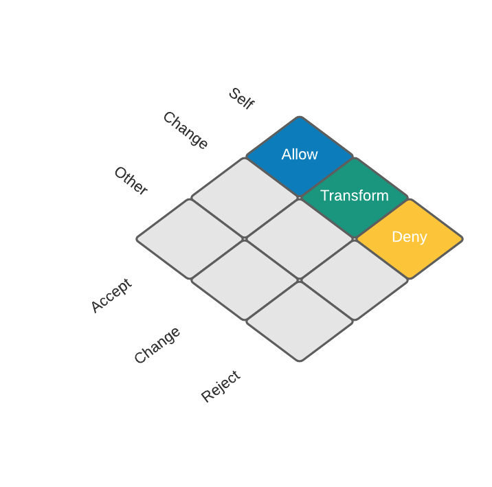
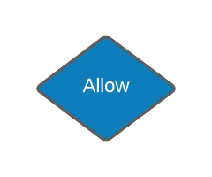
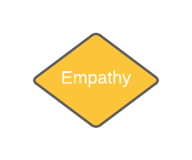

“You cannot be human alone.” - Maggie Kuhn
This is a condensation of the wisdom of seven books on communication: People Skills, The Charisma Myth, The Social Skills Guidebook, Skill with People, How to Communicate with Confidence, How to Talk to Anyone, and Just Listen.
Thesis
There are only three things: what I am, what I am not, and change.
So long as we seek pleasure and seek to avoid pain, we will crave change. The promise of change is the promise of bringing the pleasurable inside of us, and taking the painful out. The ease and contentment we are looking for may only be found, it seems, in change.
Only change provides the possibility for an end to our suffering.
Antithesis
However, change is uncomfortable.
Change means accepting parts of ourselves we previously rejected, or accepting parts of others we previously found unacceptable. So we are not lost to it, we need some control over change: to decide what we will become and what will become us.
This desire for control manifests in three ways: acceptance, rejection, and change.
Synthesis
These two sets form an intersection of nine modes of relation we can call communication. How we reside in these nine communicative modes defines everything about us by defining the border between us and what is not us. Communication is who we are, who we become, and how we affect the world.
In order to intentionally become we need to consciously communicate.

What I am comprises my internal world, my identity, and my truth. We are free to accept what we are, reject what we are, and change what we are. No approach is “better” or “worse” than the others and we assume all three in different areas simultaneously.
“Self-betrayal oozes from all our pores.” - Sigmund Freud
As we cannot not communicate, our lack of inner harmony ripples into our external world. Our body language is the major artifact of this; it is our physical reaction to how we feel. As we do not like to feel shy, anxious, insecure or discouraged, we try to escape when these feelings arise. When we feel vulnerable we cross our arms in order to feel more protected. When we feel engaged we lean forward to take more in.
Our attempts to control our inner world by consciously adjusting our body language are effective only to a degree. The root causes of our inner discomfort are not solved by outer contortions.
Instead, we must resolve our internal discomfort by taking a stance of non-avoidance. Discomfort is universal and will not go away by pushing.
In fact, we would face great loss by eliminating discomfort in our lives. The stress response serves a grand biologic purpose: to prepare us for an upcoming challenge and to note what is painful. Targeted discomfort is an agent of our inner transformation. The problem comes from how our stressors manifest.
Today we are arbiters of chronic stress. Stress comes from our workplaces, our relationships, our self-image, and our environments. Rather than the quick, productive stress responses that spur us to action, eustress, we find ourselves mired in an unwavering distress.
This is unusual in our evolutionary history. Other animals do not develop stress-related health complications. Zebras Don’t Get Ulcers.
To deal with these chronic stressors, we must delve into the sensations of discomfort. In doing so we find they are not as powerful as we imagined.
Feel your discomfort. Note where in your body it manifests and how this particular, unique discomfort feels. Be curious about this sensation which is one of the uncountably many sensations you have experienced in your curious life.
There is nothing wrong or bad about feeling discomfort. To neutralize it, try to:

“How do you know this is the experience you need? Because this is the experience you are having at the moment.” - Eckhart Tolle
What we believe about ourselves is what we project to others. What we project to others, they believe. This becomes how they treat us, which in turn becomes what we believe.
To create a better life for ourselves, we must interrupt this cycle.
There are many books on how to change what we project by changing our body language, our speech, and our appearance. These are indirect attempts at the true goal from which all outer change manifests: cultivating inner acceptance.
Inner acceptance is the basis of self-esteem, self-confidence, and self-love.
To generate firm self-acceptance we must believe firmly in our own ability. This is a difficult game because of the strong negativity bias our minds hold. Most of the stories we tell ourselves are negative. They are illusions, no matter how compelling they seem.
To unravel these deceptions we use a process of self-acceptance.
By replacing our negative habitual thoughts, we free ourselves into a state of personal acceptance. When negative thoughts come up, let them have their uninterrupted say. Invite them all the way in. Pushing them out would only cause them to simmer in silence.
Once you have heard them meditate on these replacements.
| Mental Roadblock | Realistic Replacement |
| Being shy and socially inexperienced is one of the worst things someone can be. | Shyness and social anxiety are common traits, there is nothing to be ashamed of. Plenty of people have them and still have good friends and satisfying social lives. |
| Every interaction is a test of my communication skills and social ability. | Every social interaction is a training ground for you to develop your communication skills. No one is keeping watch of your mistakes, they are too busy focusing on themselves. There is no scoreboard in the sky. |
| I must make everyone like me. | This is impossible. There are too many different types of people to make this happen. This is no reward for getting as many people to like you as possible. |
| Learning to communicate better would involve “selling out” or being inauthentic to who I really am. | No one is asking you to disregard your authentic self. We can overcome social anxiety and shyness and step into a more healthy, expressive communicative self without going against our values. It may be that you are really afraid of being vulnerable and not “selling out.” |
| I just don’t enjoy communicating. | Humans are naturally social creatures. If you do not feel the benefits of socializing outweigh the discomfort, you probably have not yet unlocked the benefits. You may have old wounds from the past, or are otherwise currently held back from truly enjoying self-expression in the presence of the other. |
| People may react badly if I take up space or am assertive. | People-pleasers tell themselves that they can get what they need without offending anyone by not being assertive. However, this often leaves them feeling used and underappreciated. The penalty is high: refusing to take up space means living a life that is largely unlived, and there are few things more tragic than this. |
| What if I cannot survive this discomfort? | What if this difficult situation is actually, secretly, exactly what I need right now? |
| What if I am not good enough? | What if I am already enough? |
| What if this goes tragically? | What if I can trust {the universe/God/myself}, even with this? |
To gain more tools to transform your negative self-beliefs, take a look at Cognitive Behavioral Therapy.
“Who looks outside, dreams; who looks inside, awakes.” - Carl Jung
To transform is to take something outside of ourselves and make it us, and to take our old consciousness and return it to unconsciousness.
There are a number of transformative practices: psychotherapy, meditation, yoga, healthy eating, physical exercise, and self-help for example. These methods are powerful because they access a place deep within us. They allow us to nurture and nourish our physical bodies, our connection to one another, our own mind, and what we really are.
We can quickly parlay with this inner world through visualization.
Top athletes use visualization before performances to feel success before they act. Sports psychologist for the US Olympic Team Nicole Detling says, “The more an athlete can image the entire package, the better it’s going to be.” Method actors circumvent the difficulty of transforming into another by repeated visualization that they are the other.
Visualization allows us to feel what was previously unfelt in our lives: our unbounded success, joy, confidence, and contentment. Once it has been felt, it can become manifest.
Three states we often need to manifest are: calm confidence, warm compassion, and deep presence.
Find a quiet space, close your eyes and relax.
Confidence: Remember a past experience when you were triumphant, such as a successful presentation or on receiving an award. See the acceptance and admiration of the crowd. Hear the sounds of the applause and congratulations. Feel your feet touching the ground and your body open to triumph.
Compassion: Imagine your funeral. Where is your funeral held? Who is speaking? What is said, and what is left unsaid? See the building where it is held, the flowers on your casket, and the assembled crowd. Hear the murmurs of condolence, the eulogies given by your loved ones. Feel your desire to absolve yourself of regrets, and the presence of death.
Our capacity to feel gratitude for ourselves is our capacity to feel compassion for another. Channel the gratitude that arises from the awareness of your own mortality into compassion for the other.
Presence: Visualize that it is the other’s last day on Earth. See their body in the fullness of its expression. Hear the treasure of their final words. Feel their presence unguarded.
Add movement to your visualizations for a deeper experience that ties physiology to psychology
What I am not defines my external world, my community, and my potential. What I am not is, paradoxically, also what defines what I am. Rather than infinitely far away, what I am not is right here within me.
How I relate to others becomes, ultimately, how I relate to myself.
“We are bound together by the sympathy of our antipathies.” - James Joyce
It is natural to reject what we are not. The repeated rejection of the other throughout our lives is precisely what has defined us. Rejecting what we are not preserves our borders and our boundaries.
However, we can often find ourselves rejecting the other when we do not need to. We reject even when our needs and boundaries are not in play. Rejecting the other needlessly does not create the positive value that meaningful rejection holds: fulfilling our needs, holding our own space, and forming our own self-definition.
This has consequences. By unnecessarily rejecting the other, we prevent the seeds of authentic communication from taking root. True connection germinates only in acceptance of the other.
Communication roadblocks are what prevent us from truly being with and accepting the other. They come in three forms:
Judging: We want to keep the perceived “badness” of the other away from ourselves.
When we judge, we block communication by creating an environment of non-acceptance. Judging emerges as criticizing, name-calling, and diagnosing. For example, listening to someone’s problem and telling them, “Your real problem is that you are too lazy to improve your own situation.”
Praising someone evaluatively is another form of judging. For example telling someone, “Oh no, you are a great mother” rather than listening and empathizing with their problem.
Sending Solutions: We feel another’s difficult feelings within ourselves, and want to resolve their problem to resolve our own discomfort.
This arrives as threatening, ordering the other to take some action, and moralizing. For example, responding to someone’s problem with, “You need to get up and tell him exactly how you feel” or “the right thing to do would be to fess up.”
Sending solutions does not allow the other to receive what they are really looking for, to be heard, felt, and understood by another piece of the universe.
Avoiding the Problem: We do not want to face the possibility of a difficult situation in their life, because it reminds us of our own difficulty.
When we avoid the problem, we do not get to the root of what is being said to us and why it is being said. This can take the form of diverting to a new topic, reassuring the other that there is no problem, and getting lost in logical arguments.
The real problem is not that there is a problem, the real problem is that the other has emotions that they are feeling that they want seen and validated.

“Empathy is about finding echoes of another person inside yourself.” - Mohsin Hamid
When we accept the other, they will unveil their deepest aspect to us. As the walls lower real communication begins.
Why does the other require a safe space before opening up?
First, there is the danger of having my deeper truths used against me.
Second, there is the possibility of a seemingly obliterating rejection.
In order to accept the other without losing our own inner acceptance, we must rely on empathy. Empathy sits in the middle of a continuum of emotional responses.
On one end is apathy: ignoring the other’s feelings. Communication cannot begin here, there is no space for the other.
On the other is sympathy: having another’s feelings for them. Communication cannot begin here either, for there is no room for myself.
The middle way is empathy: the capacity to understand another’s suffering without ourselves being taken away by it. Only from a stance of empathy do we have the capacity to recognize another’s hurt, understand it, validate it, and seek to address it. Only from a place of empathy can we give life to compassion.
To generate empathy, we must accept the other enough to understand their suffering.
Despite its simplicity, mirroring is one of the most powerful techniques for generating and broadcasting empathy for another.
Mirroring is so simple that it is our unconscious default. When the other is impatient, they may begin moving in a more forceful, urgent way. This triggers a reflective response in our mirror neurons, those pesky, beautiful echoes of the external, to gain a sense of urgency in our own body. Seeing us react like them, the other feels seen and understood.
This is no underhanded salesperson’s trick: mirroring cannot be effectively done superficially. Your mind and body are one: when you assume their body language and vocal tone you do, in fact, understand them more deeply. The only way of truly feeling with them is to be along for their ride.
One caveat: do not stay mirrored forever. Extensive mirroring may lead to sympathetic distress, rather than the tireless base of compassion that empathy provides.
“Conflict is the beginning of consciousness.” M. Esther Harding
The compulsion to change the other is natural. We may want to make them more like us, or we may mistake their pain for our own and seek its resolution.
In either case, we must be careful. The other exists precisely because they are not us and their problems are not our problems. Attempting to change for our own motives is aggression and should be avoided (see: Asserting). Instead, we must only seek to change the other when genuine conflict arises.
Conflict is unavoidable. Change is a form of conflict, and change is eternal. Through change, conflict allows us the possibility of growth, innovation, and creativity.
How, though, can we minimize the risks of conflict while maximizing its benefits?
First, there are two forms of conflict:
Realistic conflict happens because we have different feelings, needs, and values.
Unrealistic conflict is the result of ignorance, error, hostility, and win/lose thinking.
We can reduce the frequency of needless, unrealistic conflict in our lives through eliminating our roadblocks, mirroring the other, and replacing our negative automatic thoughts.
Handling realistic conflict depends on the type of conflict in play.
For a conflict of feelings, use the one-two-three method to drain the situation of emotional tension through release.
Listen reflectively to any defensiveness that comes up in the other, and return to (1) as needed.
For a conflict of needs, use collaborative problem solving techniques.
For a conflict of values, agree to disagree. It is not your prerogative to change the other’s values. However, it is important to make sure the values conflict is not another form of conflict in disguise.
A single problem may have components of all three. Pulling from each of these three approaches is necessary in solving a particular problem.
Change defines what I become and what becomes me. As we make the internal external and the external internal, we negotiate a process of transformation. This negotiation of the boundary between self and other is the very process that defines self and other.
We become what we are through communication, the voice of change.
“Listening is a search to find the treasure of the true person behind the words.” - Robert Bolton
True listening is rebellion to the ego. It means setting aside, temporarily, what we are and embracing the whole of the other so that we may understand. For the time being, what they are becomes what we are.
This can be fraught, calling us to put away our desire for us to stay separate of them and our fear of obliteration. The technique most widely used by therapists and caregivers to create this environment of (temporarily) stifled ego is reflective listening.
Reflective listening has three parts, spanning twelve techniques.
Attend: Are you here? Are you aware? Are you aware of me?
Attending means being engaged and fully present in witnessing the other. To attend is to listen with the whole body.
Find a (1) posture of involvement, you intuitively know what this looks. Stay relaxed and open, facing them squarely in an attentive way. Drink them in with your open posture.
Engage the body in appropriate (2) body movement in response to the speaker. There is a dynamic symphony to conversation, much of which remains unconscious. Try consciously allowing yourself to react receptively with your motion.
Maintain strong, attentive (3) eye contact with the other. Look at their face, at their body and what they are doing. Your eyes are the scouts of your awareness: be vigilant with keeping attention on the other.
Make sure to engage in a (4) non-distracting environment where you are able to comfortably attend. Remove any physical barriers
Follow: Are you with me? Are you witnessing? Are you willing to receive me?
Following means staying out of the other’s way so that you can discover how the speaker actually feels about their situation.
Use (5) door openers as a non-coercive means of initiating the other to share. Try noting something about their body language, as in “you are looking a little closed off right now,” and following with an invitation to talk, such as “do you want to talk about it?” Then provide silence for the other to fill. Attend to their response fully.
(6) Minimal encourages let the other know you are with them and that it is safe to continue. The goal is neither to agree nor disagree, but rather to encourage the speaker to keep talking. Nod, use small “mhms” or “go on”s, or anything else that is expedient, but keep it minimal.
As you follow, employ (7) infrequent questions to bring the speaker into a more full expression of how they feel. Most listeners ask far too many questions, as a way of guiding the conversation in a particular direction. This is not your role; ask open ended questions, but ask them infrequently.
An (8) attentive silence between the speaker’s thoughts lets them know that you are chewing through what they have said and have no intent to interrupt. Let silence last longer than you are used to, to let the other open up more than they are used to. “The beginning of wisdom is silence” - Solomon Gabirol
Reflect: Do you understand me? Do you accept me? Have I been heard?
Reflecting is the process of broadcasting to the other that you have heard their feelings without judgment.
(9) Reflect feelings. Feelings take primacy in us, despite our best attempts at rationality, and yet we often miss out on feelings entirely. Focus on their feeling words, their body language, and the general content of the message and state what you are seeing: “ah, I hear that you feel uncertain because ...”
Also (10) paraphrase content. Content forms the vessel of the feelings being worked through in the other; to understand the feelings we must first understand the situation that the feelings emerged from. Let the other know you understand by reflecting the heart of the content being shared. Caveat: parroting is an oft suggested technique that falls flat and can come across as poor technique by wanna-be therapists.
Putting the two together allows us to (11) reflect the meaning of what the speaker is saying. Try “you [feel/are] … [because/since/about] …” Reflecting meaning broadcasts that you’ve understood what the speaker has felt up to this point in their share and why they felt that way.
(12) Summative reflections span longer sections of conversation and allow the listener to make realizations that they otherwise would not. When we talk we quickly lose the thread of what we have said and why it was brought up. Showing the other the theme of what they have been saying lets them have true, original insight into their sharing. Try “As I’ve been listening to you, your main concern seems to be…” or “One thing you keep coming back to is…”
“Only the wisest and stupidest of men never change” - Confucious
Assertion is an act of self-definition. By standing up for our needs and values we make space for our own unique existence. Our self-esteem and self-respect are the accumulation of our years of succeeding or failing to assert our right to exist.
For many of us, this is difficult. We are afraid that by standing up for ourselves we will inflict pain on another. We have all felt the pain of another unapologetically taking from what we are and we do not want to give that pain to another.
However, assertion does not mean taking from another. Healthy assertion sits on a continuum between submission and aggression.
To submit is to allow another to reach in and take from what you are. This may seem like an agreeable, people-pleasing approach that will make others fond of you. However, deep down we know this is not the case. Submissiveness in a relationship leads to resentment in the submissive and frustration in the other as they do not experience the submissive’s authentic self. The price of repeated submission is an unlived life, less satisfying intimate relationships, and an inability to control the pent up emotions that are left unreleased.
To aggress is to reach in and take from the other. There are benefits of this: aggressive behavior correlates positively with income, career success, and social standing. Aggressive behavior can be an effective short-term means of satisfying our needs. However, long-term aggression erodes relationship trust, breeds hatred in the other and fear of counter-aggression in the self, destroying the need-fulfilling capacity of the relationship. Aggression costs us feelings of guilt, alienation and the unfortunate reality that dehumanizing the other inevitably means dehumanizing the self.
Assertion sits in the middle of submission and aggression. You hold your own space, making sure your needs and values are being taken care of, without impinging upon the needs and values of the other. Assertive behavior is the most effective, long-term approach to satisfying our needs. Assertive people like themselves more, having more fulfilling relationships, maintain lowered internal fear and anxiety, and live their own life.
Assertiveness is best implemented through assertion messages. Use assertion messages when someone is violating your space and you want to change their behavior. There must be a high probability that the behavior will be changed without violating the other’s space or damaging the relationship.
Healthy assertions contain three parts.
Non-judgemental Description of the Behavior: Often the trespasser does not know what they are doing wrong. Be specific. Do not bring in your inference of their motive, character, or attitude. Keep it observable.
Disclosure of Feeling: A direct expression of feelings gives importance to the message. Make sure to find the true emotion. The first feeling that arises is most important, not the secondary feelings that arise in reaction to the first. Listen to your body. This can take personal work, we often suffer from a constipation of emotions.
Clarification of the Tangible Effect on the Asserter: Most people will change if they see they are invading your space, so clarify precisely how this is happening.
A template for this is “When you [non-judgemental description], I feel [disclosure of feeling] because [clarification].”
For example, “When you leave your books on my desk, I feel provoked because this is the space I use for my writing supplies.”
After asserting, leave silent space for the other to respond. They may be receptive, or they may react defensively. Listen reflectively any defensiveness that arises, and repeat the assertion message as needed.
“Run from what’s comfortable. Forget safety. Live where you fear to live. Destroy your reputation. Be notorious.” - Rumi
When we change change, we update the direction we are moving in. We angle our sails in a new way. We shift our growth towards a new vision.
To change change is to say, “this is not where my highest good lies, but somewhere else.” We change change in a number of ways: by producing new art, in forming new relationships, through our shared sexuality, and via architecting new futures. In a word, by conversing.
There are, thankfully, no rules to conversing. Our authentic expression of self, community, and universe has no fixed form. Its formlessness is its only real aspect.